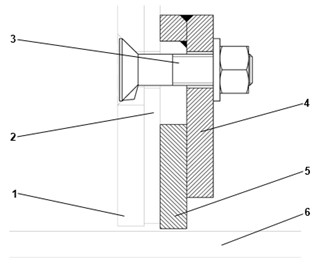

Replacing Wear Elements
SBS-MR-031C
Revised: 2022-10-01
Purpose/Application
Defines the procedures for replacing the wear elements on the pan mixer.
PPE Required
General
Bump cap, safety glasses, hearing protection, long sleeves, steel toed safety shoes.
Have available a respirator with certified cartridges, or a PAPR, in case of a silica release or toxic batch material spill.
Safety Hazards
Respirable Crystalline Silica

Safety Controls
- Lockout-tagout-verify the mixer before performing maintenance work. Follow plant procedures.
- The Hazard Communication Standard (HCS) requires chemicals to have Safety Data Sheets (SDS), please refer to the SDS for chemicals listed in this SOP for additional hazards, first aid measures, toxicological information, accidental release measures, and handling/storage of the chemical.
- Review the Emergency Action Plan before performing work.
Equipment Needed
- Access to the mixer control panel or the SCADA control station.
- Hand tools as determined by the maintenance personnel.
Comments
- Read a section thoroughly before starting the work. Personnel performing the tasks in this document must have completed the required training.
- For additional information, refer to:
- SBS-ET-031 Troubleshooting the Pan Mixer
- SBS-OP-031 Operating the Pan Mixer
- Vendor manual in the Resources library
Replacing Wear Elements
-
Inspect all wear elements at regular intervals for wear and damage. Replace if
necessary. Otherwise, serious damage to the mixer may result.
- The wear limit is reached when the screw heads are level with the wear liner.
- Wear liners must be replaced when this wear limit is reached.

1
Wear liner
2
Countersunk screw
3
Disk
4
Nut
5
Mixing trough
-
Replacing steel sheet inner wall liner segments:
- Detach the old inner wall segments by grinding off the tack welds on the joints of the inner wall segments and central section.
- Remove the old inner wall segments.
- Align the new inner wall segments with the inner wall.
- Tack weld together at the joints with short weld seams.

1
Inner wall wear liner
2
Outer wall wear liner
3
Wear plate ridge
4
Floor wear liner
-
Replacing wear parts for the discharge slide seal:
- Unscrew the floor wear liner of the discharge slide.
- Replace the parts, and screw them back on.

1
Discharge slide seal
2
Floor wear liner
-
Replacing a mixing trough scraper:
- Remove the mounting (4) with the clamp (5), and remove the scraper.
- Install the new scraper (3) and lightly fix into place with the clamps (5) and mountings (4).
- Adjust the scraper (3) so that there is a gap of 1-2 mm from the wear liner of the discharge slide (1).
- Tighten the clamps with the fastening screws.
Note:Inspect all scrapers at regular intervals, and readjust if necessary.
Note:Images of a standard scrapper and an optional plastic scraper are shown on the right, and on the next page.

1
Dischargeslide wear liner
2
Mixing trough 3
Scrape
4
Screw connection (mounting)
5
Clamp
6
Discharge
Figure 1. Standard Scraper 
1
Outer wall wear plate
2
Mixing trough
3
Screw connection (mounting)
4
Clamp
5
Scraper
6
Discharge slide wear liner
Figure 2. Plastic Scraper (Optional) 
1
Outer wall wear plate
2
Mixing trough
3
Screw connection (mounting)
4
Clamp
5
Scraper
6
Discharge slide wear liner
Approval
|
Person |
Role |
|---|---|
|
Johnathan Fisher |
SBS Manager – R&D |
|
Phillip Wilson |
EHS Continuous Improvement Manager |
|
Jeremy Singletary |
Shift Leader, Research & Development |
Revision History
| 2022-10-01 |
Approved by Johnathan Fisher, SBS Manager – R&D |
|
Original Issue |